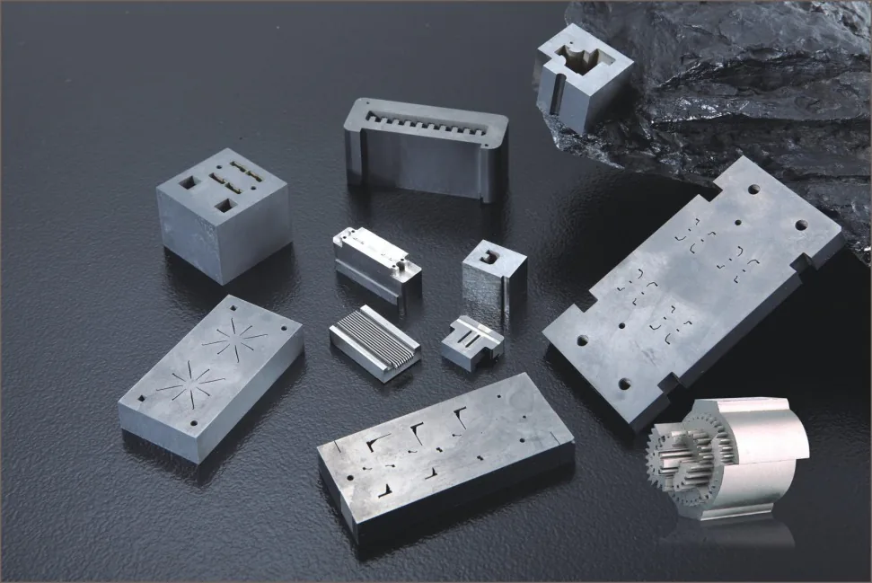

Typical Components and Applications
- mold inserts
- precision plates
- connector mold components
- small cores and cavities
- automation tooling parts
- inspection and assembly fixtures
Mold Inserts / Plates / Tooling Components
Custom mold inserts, plates, cores and tooling components produced with wire EDM, PG grinding, mirror EDM and precision inspection support.

Typical Components and Applications
Materials
Tolerances
Equipment
Precision mold components include inserts, cores, small plates, punches, wear parts and custom tooling parts whose dimensions must relate correctly to an assembly. The manufacturing problem is rarely one isolated tolerance. Datum transfer, material condition, heat treatment, feature access, surface finish and the sequence of grinding, wire EDM, sinker EDM and machining all influence how a component fits and functions.
Jinyi Precision reviews parts for connector molds, precision stamping tools, electronic-component tooling, automation fixtures and related custom assemblies. The service is drawing-driven: the quotation identifies the controlling revision, critical features, proposed process route and inspection approach. Where a component uses a separate carbide or ceramic element, the material and assembly relationship must be reviewed rather than treated as a generic mold-part specification.
Mold builders request inserts and cores for molding detail, replacement components for maintenance, and small precision plates that locate other tooling elements. Connector and electronics manufacturers may need punches, forming details and cavities that control very small product geometry. Automation builders use custom plates, nests and inspection fixtures whose hole relationships and reference surfaces must match existing equipment.
A prototype mold component is often used to confirm fit, process feasibility and inspection interpretation. A replacement component may need to match an existing assembly without access to the original process history. Repeat production requires controlled revisions and interchangeability. The buyer should identify which situation applies, whether mating parts are available, and which surfaces or features control final assembly.
Material options listed for this service include tool steel, tungsten carbide, stainless steel, ceramic materials and customer-specified mold materials. The exact grade, hardness, heat-treatment condition and material supplier requirement should be included in the drawing or purchase specification. These details determine whether features are created before or after heat treatment and which finishing process is practical.
Material substitution should only be reviewed when the customer permits it. A request for an “equivalent” must define the required performance, hardness, toughness, corrosion condition, wear mode and coating. Carbide and ceramic elements require their own grade documentation and assembly review. If the customer supplies a blank, the RFQ should identify finished datum surfaces, remaining stock and any previous processing.
The current capability references include approximately ±0.002 mm for suitable PG-ground profiles and around ±0.005 mm for applicable mirror-EDM features. These numbers do not define the tolerance of a complete mold component. Part size, material, heat treatment, feature type, datum structure, number of setups and measurement method determine what can be confirmed for each dimension.
Mold-component drawings should establish a functional datum system and separate profile, size, orientation and position requirements. Hole pitch may be checked by CMM, projector or height measurement depending on the part; formed edges may require optical comparison; reference faces may require flatness or parallelism inspection. The buyer and supplier should agree how radii, edges and cavity boundaries are interpreted before production.
Listed equipment relevant to mold components includes Seibu Electric wire EDM, Sodick AD30LS EDM, WAIDA PG profile grinding, precision grinding processes. Each process has a specific role: machining prepares accessible geometry, wire EDM creates conductive contours, sinker EDM addresses enclosed features, grinding controls reference surfaces, and PG grinding finishes suitable profiles.
The route is planned from the final datums backward. Rough features and heat treatment are scheduled so that enough stock remains for final reference surfaces. Critical contours are then created from those datums, followed by cleaning and inspection. When partner capacity is involved, the quotation should identify the outsourced boundary and which party controls final acceptance. A buyer should compare the complete route, not only the machine list.
Provide a controlled 2D PDF with tolerances and inspection datums, plus STEP or STP data for three-dimensional relationships. Include material grade, hardness, heat treatment, quantity, surface finish, coating, target delivery and the intended assembly. Identify critical features, mating surfaces, shutoffs, working edges and any dimensions that must remain interchangeable with an existing mold.
For replacement parts, provide the previous drawing revision, mating-part information and any observed failure or wear. If an inspection report, material certificate, NDA or special packaging is required, state it before quotation. The inquiry form collects project details and does not accept attachments. You can email PDF, STEP, STP, DWG or DXF files directly without submitting the form first.
Jinyi Precision owns and operates a Hexagon 686 coordinate measuring machine (CMM) in-house. Dimensional inspection follows the project requirements and agreed inspection plan. Inspection methods are selected for the features and acceptance criteria specified on each drawing.
Quality control follows the approved drawing revision and the measurement plan for critical features. Inspection can combine CMM, optical projection, toolmaker’s microscope inspection, height measurement and surface-roughness testing when appropriate to the geometry. The method should be selected for the feature rather than listed generically, and the same datum interpretation should be used by manufacturing and quality teams.
Our ISO 9001:2015 certification scope is the production of precision mold accessories. Buyers who need the certificate, material traceability or a specific dimensional report should request those records before the order is released. Packaging should protect precision surfaces, corners and working edges through transport and incoming inspection.
Maintenance orders often need one replacement component rather than a complete tool. In that situation, assembly fit and revision history can matter more than nominal size alone. If the original drawing is incomplete, the buyer should identify mating parts, wear surfaces and the dimensions that control interchangeability. Reverse engineering should never be assumed without clear scope and available reference parts.
Repeat orders should preserve the approved drawing, material, heat treatment, coating, inspection basis and packaging. A revision change should trigger a review of affected tooling and process steps. Email provides a controlled record for technical decisions; WhatsApp can support quick questions, but final approvals should be reflected in the purchase order, drawing or quotation.
Wire EDM Mold Insert - Market: Precision Mold Industry. Requirement: A mold insert with a complex profile, controlled hole positions and defined fit within the tooling assembly. Process review: Material, wire EDM route, datum strategy, grinding sequence and final inspection requirements must be confirmed against the approved drawing. Verification focus: Profile, hole position, datum relationship and assembly-critical dimensions.
This scenario describes the drawing and process review required for a precision mold insert. Final acceptance criteria, measured results and assembly performance must be confirmed for the specific customer drawing and inspection record.
FAQ
No. Jinyi focuses on precision custom machining and supports mold components, connector tooling parts, automation parts and precision plates.
Yes. We select suitable inspection methods for hole positions, pitch, angles, blade profiles and surface roughness according to the drawing.
Yes. The company supports overseas buyers by email and WhatsApp communication.
PDF, STEP, STP, DWG and DXF files are useful. Please include tolerances and critical inspection areas.
Send an Inquiry
Email your drawings directly, or use the form for an initial inquiry. Please include the material, quantity, critical tolerances, surface finish and required delivery date. You do not need to submit the form before emailing us.